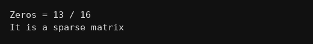

package multiarrays;
public class Q099 {
public static void main(String[] args) {
int a[][] = {{0,0,5,0},{0,0,0,0},{7,0,0,0},{0,0,0,9}};
int z = 0;
for(int i=0;i<4;i++){
for(int j=0;j<4;j++){
if(a[i][j]==0) z++;
}
}
// zeros aadhe se zyada ho to sparse
System.out.println("Zeros = "+z+" / 16");
if(z>16/2)
System.out.println("It is a sparse matrix");
else
System.out.println("It is not a sparse matrix");
}
}